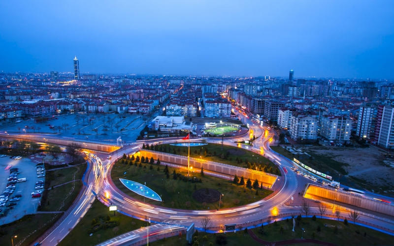

Tarihi ve kültürel açıdan zengin Konya, Mevlana Müzesi, İnce Minare Medresesi ve Çatalhöyük gibi önemli eserlere ev sahipliği yapmaktadır. Doğal güzellikleri ile de öne çıkan Konya'da Beyşehir Gölü, Meram Bağları ve Göynük Kanyonu gibi turistik yerler yer alır. Türkiye'nin en büyük sanayi şehirlerinden biri olan Konya, etli ekmek ve höşmerim gibi lezzetli yöresel mutfağıyla da dikkat çekmektedir.